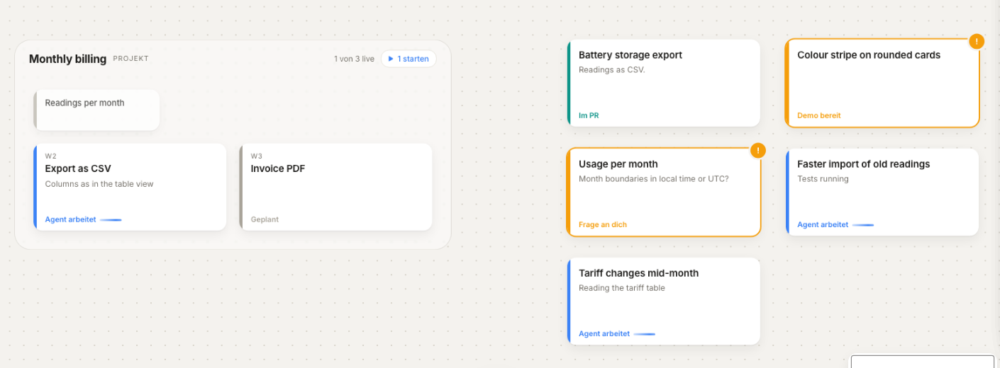

Canvas
Space is memory.
Every task is a card you place where it belongs. Projects hold their workstreams; related work sits together. You know where things are the way you know where things are in a room, and the colour says what each card needs.
- Agent working
- Waiting for you
- Approved
